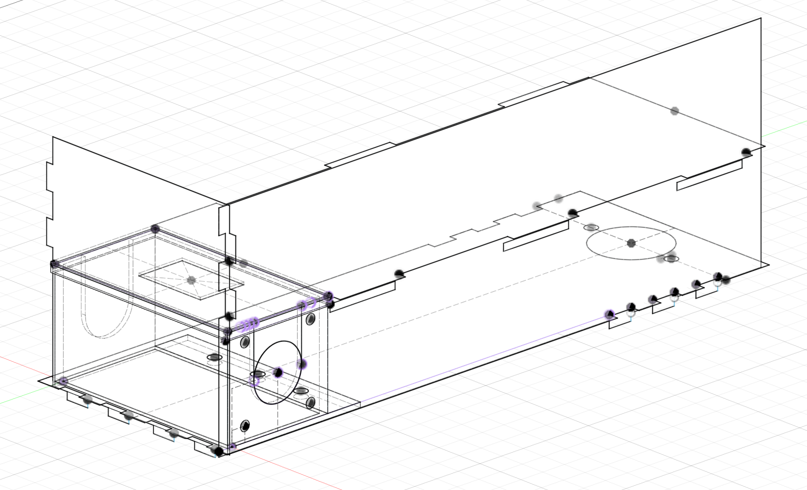
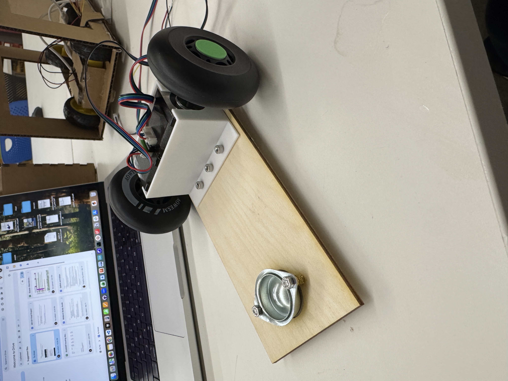
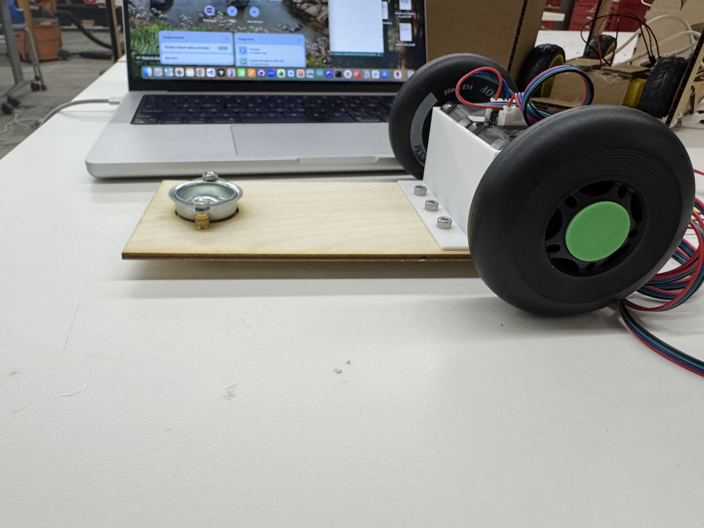
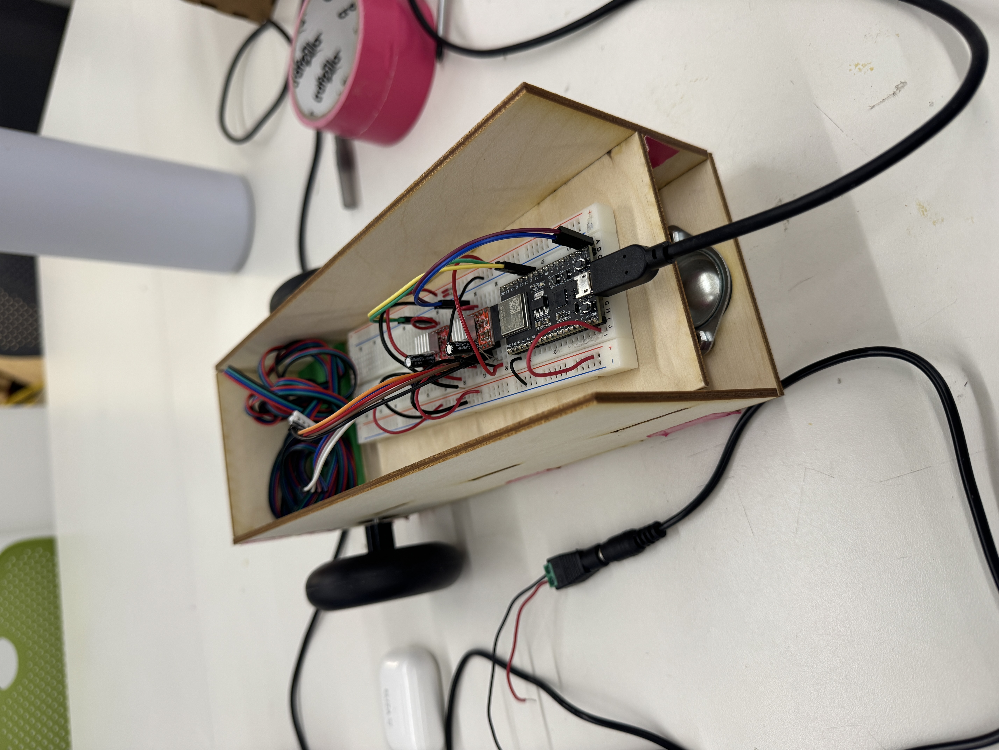
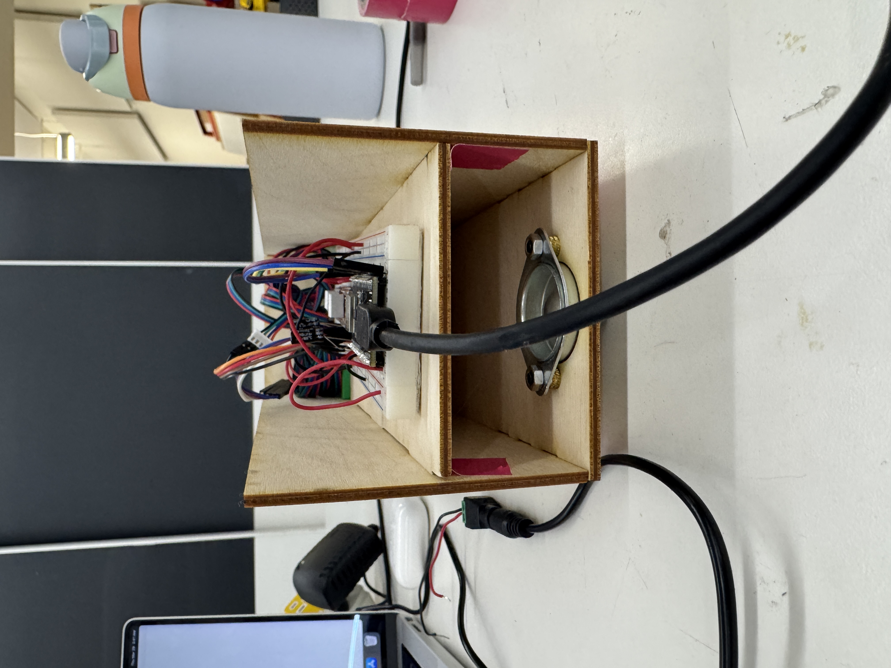
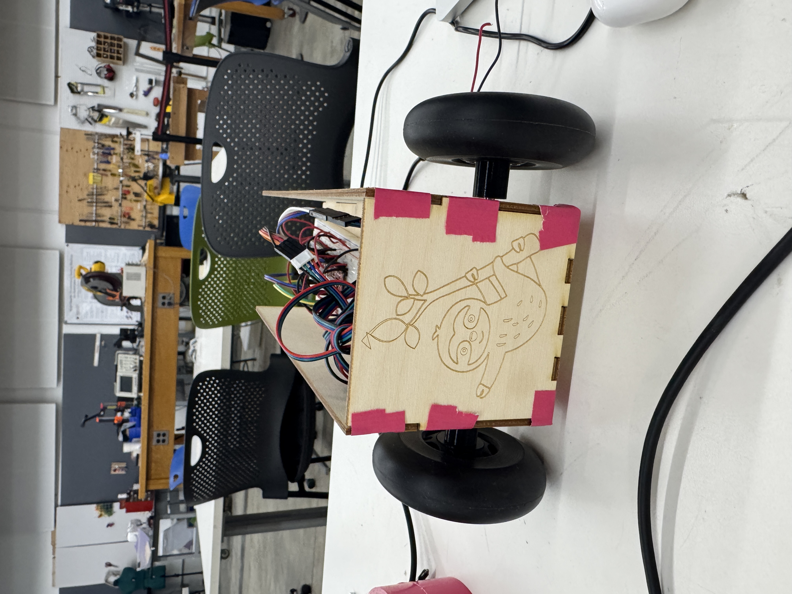
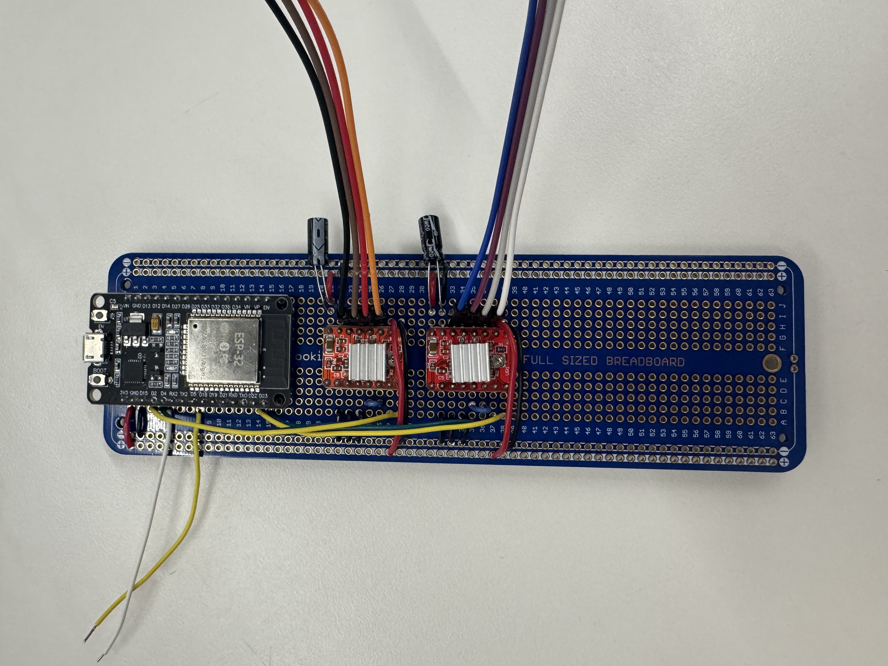
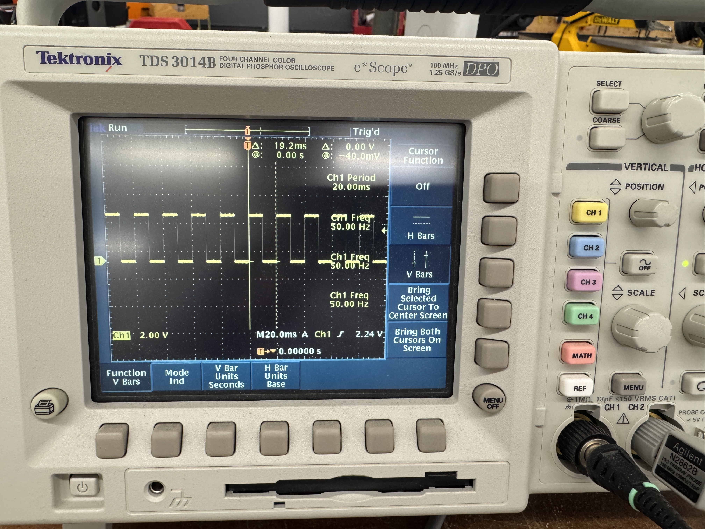
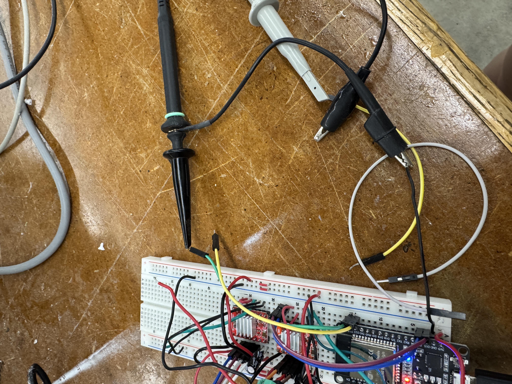

<div class="textcontainer">
<p class="margin"> </p>
<h3>Week 7: Electronic Outputs</h3>
<h4>Assignment: Minimum Viable Product for Final Project</h4>
For my MVP, I created a car with a sloth on it that uses 2 stepper motors to move. The reason I used the stepper motors
instead of the (much MUCH easier, as I learned this week) DC motors was because for my final product, I want the car to
move very precise distances and turn exactly the same way every time. <br>
I began my project by creating the base of the car with the two wheels, the rotating ball in the front and the
stepper motors attached to the wheel. I knew I needed to create a tight enclosure for my wheel so I measured and
through very much trial and error, I created the following box for my stepper motors. I also added screws and washers
to make sure the car front wheels were at the same height as the back wheels.
<br>
Here is the CAD for the enclosure and the rest of the car. <br>
<p></p> <br>
<a href='./Stepper Bodies.f3d' download > Download my CAD for this enclosure and also the rest of the car</a> <br>
<p></p> <br>
<p></p> <br>
My next step was wiring the stepper motors. This turned out to be very challenging. I found that stepper motors (and stepper motor
drivers) are very inconsistent. One of my stepper motor drivers worked on and off, so I ended up just having to replace it. Further,
it was almost impossible to debug given that every single breadboard connection through the wires could be randomly faulty. Here was my
first pass at wiring the motors. Notice how even though the wiring is the same, one just moves slower (mysterious! still unsolved!).
<video controls style="width: 200%; flex-shrink: 0; max-width: 400px;">
<source src="./motors.mp4" type="video/mp4">
Your browser does not support the video tag. <a href="./motors.mp4">Download the video</a> instead.
</video>
<br>
Then, I attached these motors to the wheels on my car. I 3D printed press fit pieces inside of the wheel that also
attached to the motors and also 3D printed a secure press fit top to my box that held the motors so they would
stay tightly in place. <br>
<a href='./Wheel Connectors.f3d' download > Download my CAD for these pieces.</a> <br>
<video controls style="width: 200%; flex-shrink: 0; max-width: 400px;">
<source src="./moving_car.mp4" type="video/mp4">
Your browser does not support the video tag. <a href="./moving_car.mp4">Download the video</a> instead.
</video> <br>
Now the car was able to move. Next, I built a body for my car. I made there be two levels.
One for the phone and one to hide the breadboard. This next week, I will make the base layer a
little higher so that the breadboard can go in the bottom layer and covers the 3D printed
press fit piece. Mostly, everything fit, but because of the .1 mm variation through the wood,
I will probably want to be more careful about how kerf changes in different locations/when it is
important for my final iteration. I also engraved a sloth into the back as a substitute for the
final sloth face that will exist at the end. <br>
Here is what it looks like: <br>
<p></p> <br>
<p></p> <br>
<p></p> <br>
Then, mysteriously one of the stepper motor wheels completely stopped working and after debugging/office
hours, the resolution was that since there were so many wires, I should just solder a breadboard. So
that's what I did and here is what it looks like: <br>
<p></p> <br>
Then, I wired it back up and figured out that both motors ran when attached to the first motor driver.
This allowed me to conclude that one of my motor drivers doesn't work, so my next
steps will be to de-solder the dysfunctional one and get a new one. Separately, for my input device for a week,
I have a capacitor in my bredboard which is used to turn on and off the sloth car. When the plates are
touching, the car moves. This is also soldered into the board above. Also, I made the speed slower by wiring
all the stepper motor side pins into ground. <br>
<video controls style="width: 200%; flex-shrink: 0; max-width: 400px;">
<source src="./car_final.mp4" type="video/mp4">
Your browser does not support the video tag. <a href="./car_final.mp4">Download the video</a> instead.
</video> <br>
Finally, here is the code that does that:
<button class="btn btn-secondary" type="button" data-bs-toggle="collapse" data-bs-target="#codeCollapse" aria-expanded="false" aria-controls="codeCollapse">
Show/Hide Code
</button>
<div class="collapse mt-3" id="codeCollapse">
<pre><code>
#include <AccelStepper.h>
const int stepPin = 2; //green
const int dirPin = 15; //yellow
const int stepPin2 = 23; //green
const int dirPin2 = 22; //yellow
const int analog_pin = 4;
const int tx_pin = 5;
AccelStepper stepper(1, stepPin, dirPin);
AccelStepper stepper2(1, stepPin2, dirPin2);
// Sensor state
long capacitance_value = 0;
long sensor_sum = 0;
int sensor_count = 0;
const int N_samples = 100; // average over this many samples
// Timing
unsigned long lastPrintTime = 0;
const unsigned long printInterval = 200; // ms
void setup()
{
Serial.begin(9600);
delay(1000);
Serial.println("beginning");
pinMode(tx_pin, OUTPUT);
digitalWrite(tx_pin, LOW);
stepper.setMaxSpeed(1000);
stepper2.setMaxSpeed(1000);
stepper.setSpeed(0);
stepper2.setSpeed(0);
}
void loop()
{
// Keep motors stepping continuously
stepper.runSpeed();
stepper2.runSpeed();
// Do sensor sample per loop pass
updateCapSensor();
// Decide motion based on latest averaged value
if (capacitance_value > 4000) {
stepper.setSpeed(50);
stepper2.setSpeed(50);
} else {
stepper.setSpeed(0);
stepper2.setSpeed(0);
}
}
void updateCapSensor()
{
int read_high;
int read_low;
int diff;
digitalWrite(tx_pin, HIGH);
delayMicroseconds(100);
read_high = analogRead(analog_pin);
digitalWrite(tx_pin, LOW);
delayMicroseconds(100);
read_low = analogRead(analog_pin);
diff = read_high - read_low;
sensor_sum += diff;
sensor_count++;
if (sensor_count >= N_samples) {
capacitance_value = sensor_sum / N_samples;
sensor_sum = 0;
sensor_count = 0;
}
}
</code></pre>
</div>
<a href='./final_project.ino' download > Download my arduino code </a> <br>
So in terms of the assignment, my output is the stepper motor, my input is the capacitor button.
I also measured this with an oscilliscope for part 3. Here are pictures of the oscilliscope reading and
also my wiring setup. I looked at the voltage reading over time of my step pin output over time. We can
see from the images that it is operating on a fixed clock with voltage being sent every 19.2ms which
makes the frequency approximately 50 Hz.
<p></p> <br>
<p></p> <br>
</div>